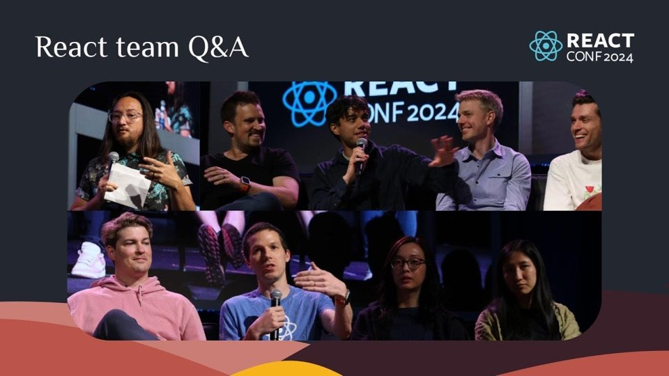

2024 · React Conf
React チームへの公開質問
React Team Q&A

見どころと解説
Lauren と React チームが会場からの質問に答える。コンパイラの実演「手書きのメモ化を忘れよう」を見たあとなら、今後のコンパイラの振る舞い、パフォーマンスの制御、既存環境への組み込みを扱う部分へ進みたい。デモで追ったのは一つのアプリだが、質問者にはそれぞれ別のプロジェクトがある。より多くの最適化をフレームワークに任せたとき、開発者は何を自分で計測し、どこまで制御したいのか。その問いを自分のアプリの性能計測にも持ち帰れる。